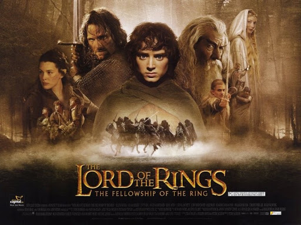

J. R. R. 톨킨이 지은 판타지 소설 《반지의 제왕》의 실사 영화.
당초 원작자인 톨킨은 영화화는 절대 불가능할 것이라고 호언장담했고,[1] 영화 판권도 밀린 세금을 내기 위해서 그냥 헐값에 팔았지만, 훗날 피터 잭슨 감독에 의해 3부작 영화로 제작되어 높은 비평적 성과와 전례없는 대흥행을 거두어 2000년대 초반 세계 영화사에 엄청난 신드롬을 일으킨 명작이다. 
대한민국에서는 1편은 2001년 12월 31일, 2편은 2002년 12월 19일, 3편은 2003년 12월 17일 개봉해 각각 387만, 518만, 596만 명의 관객을 동원하여 2007년 트랜스포머가 개봉하기 전까지 '역대 최다 관객수의 외국영화 타이틀'을 차지했다.
판타지 장르 영화의 영원한 고전이자 대표작으로 자리잡고 있으며 동시에 트릴로지 역사상 최고의 걸작 이라는 평도 받는다.[2]